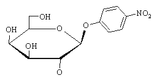
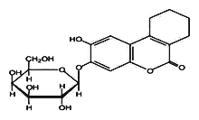
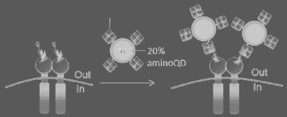

Biochemical assays involve the quantification of specific biochemicals or the monitoring of specific biochemical reactions in a cell. The image here is of a mouse embryo in which the lacZ protein is produced in developing cells of the spinal cord. LacZ is one of the biochemical reactions that can be easily monitored using one of these assays. The compound Xgal will turn blue in its presence allowing the staining of cells that express it.
Section divider: Biochemical Assays. A mouse embryo with a row of blue X-gal stain along its developing spinal cord, where lacZ is expressed.
Enzymatic Reporter Assays
β-galactosidase (lacZ)
Alkaline Phosphatase (phoA)
β-lactamase (bla)
Fluorogenic substrateXgal (blue)

oNPG (yellow)

Sgal (black)
LacZ is one of the most commonly used biochemical assays. It has many variants, and each differs by the type of instrumentation used for the measurement and the specific compound employed. In each case, the b-galactosidase protein encoded by lacZ will hydrolyze galactose residues off the substrate. There are substrates that will turn blue, yellow, or black upon hydrolysis. There are also fluorogenic substrates that that can be detected by cytometry, fluorimetry, or fluorescence microscopy after hydrolysis.
If you just replace the galactose moiety with phosphate, all the same color-generating chemicals can be used to monitor alkaline phosphatase activity. Though the same diversity of substrate does not exist for b-lactamase, a limited set of fluorogenic and chromagenic substrates including nitrocephin exist here too. These enzymatic reporter genes are often used in the same context as GFP and RFP. The measurements are often more precise and sensitive due to the amplification obtained from watching conversion of a substrate rather than the protein itself. For example, to get 100x over background signals from GFP in E. coli, you typically must express it from a high-copy plasmid. However, genomically-encoded LacZ can provide 10,000-signals over background.
Three reporter enzymes are listed: beta-galactosidase (lacZ), alkaline phosphatase (phoA) and beta-lactamase (bla). Around them, the chemical structures of four galactoside substrates: a fluorogenic substrate, Xgal which turns blue, oNPG which turns yellow, and Sgal which turns black.
Enzymatic Reporter Assays
Involves introducing a substrate compound to the cells or a partial lysate of the cells
Readout can be absorbance, fluorescence, electrochemical (etc.) based on the choice of substrate
Many of these chromagenic and fluorogenic substrates are cell permeable, and there are additional chemical modifications that can render them cell permeable when they are not. Thus, you often can perform these assays directly on intact cells. Alternatively, they can be performed in a partial lysate of the cells.
Different substrates are read out in different ways. For bulk absorbance measurmenets using a spectrometer, o-nitrophenol based substrates are usually the best. For visual readout on colonies in a plate, the insoluble products of Xgal and Sgal are best. For cytometers, fluorimeters, or microscopy, the fluorogenic substrates are required. Additionally, there are substrates for these enzymes that change electrochemical properties upon hydrolysis allowing detection with electrodes.
I highlight the enzymatic assays because they are commonly used, and there many of them. There are assays for monitoring MAP kinases, for monitoring calcium concentrations, for watching protein:protein interactions, etc.
The same four substrate structures — fluorogenic, Xgal (blue), oNPG (yellow) and Sgal (black) — now with two bullets: the assay involves introducing a substrate compound to the cells or a partial lysate; and the readout can be absorbance, fluorescence, electrochemical and so on, depending on the substrate.
Staining Measurements
Stains specifically label some biochemical species of a cell, or are used as a probe of permeability or the chemical environment of a cell (pH detection, calcium detection, etc.)
Can stain things on the surface of the bacterium (displayed epitopes, proteins) with conjugated antibodies
Can stain microbiological biochemicals (flagella, pili, carbohydrates) with lectins or antibodies
Can do chemical stains (gram staining)

Live-cell impermeable propidium iodide
All-cell permeable SYTO® 9
A staining proceedure with single-cell fluorescence readout (cytometry or microscopy) for determining the percentage of live bacteria in a population
Another type of biochemical assay involves stains. Stains specifically label some biochemical species of a cell, or are used as a probe of permeability or the chemical environment of a cell (pH detection, calcium detection, etc.) You can stain things on the surface of the bacterium such as displayed epitopes and surface proteins with conjugated antibodies. These are reagents constructed from fluorophores and antibodies chemically linked together. They will stain the cell by specific binding to the epitope on the surface of the cell. You can quantify the staining by any of the various fluorescence methods. You can also stain microbiological biochemicals on the cell surface such as flagella, pili, and carbohydrates using lectins or antibodies. Lectins are binding proteins like antibodies that bind to specific carbohydrate patterns. There are also more general stains, such as gram stain, that will light up the peptidoglycan and stain many cells generally.
Four bullets: stains label some biochemical species of a cell, or probe permeability or the chemical environment such as pH or calcium; surface things such as displayed epitopes and proteins can be stained with conjugated antibodies; microbiological biochemicals such as flagella, pili and carbohydrates can be stained with lectins or antibodies; and chemical stains such as gram staining. Beneath them, a diagram of an antibody-coated quantum dot binding receptors on a cell membrane.
…but be careful!
Bacteria are different sizes at different stages of the growth phase
Replication, Transcription, and translation rates are different at different stages of the growth phase
Toxicity in a cell can increase or decrease the normalized activity observed in a cell
The “proper” way to handle the data for such experiments is debatable. DON’T GET FANCY WITH THE MATH!
There are a number of things you should be careful about when performing biochemical assays that have quantative readouts. Bacteria are different sizes at different stages of the growth phase. The process of replication, transcription,a nd translation all have different rates based on the phase of growth, the medium composition, and the genetic composition of your strain. Additionally, the growth conditions or your genetic modifications can differentially affect the growth of specific strains.
These differences in cell physiology and growth rates can play havoc with your experiments. It is very easy to fool yourself into thinking a genetic device is working when in reality it is an artifact of the growth conditions. It is tempting to do extensive data manipulation to control for deviations in your experiment. There are many notable examples of scientists performing elaborate corrections to their data that make small differences in original signal look far more dramatic. Such manipulation is highly discouraged since it is difficult to justify these corrections. Best practice is to normalize for cell density and for signal strength against a standard, but nothing else. This does not guarantee that your data will not lie to you, So, be careful, and be cautious in your conclusions.
But be careful. Four cautions: bacteria are different sizes at different stages of the growth phase; replication, transcription and translation rates differ across the growth phase; toxicity in a cell can increase or decrease the normalized activity observed; and the proper way to handle the data is debatable — don't get fancy with the math.